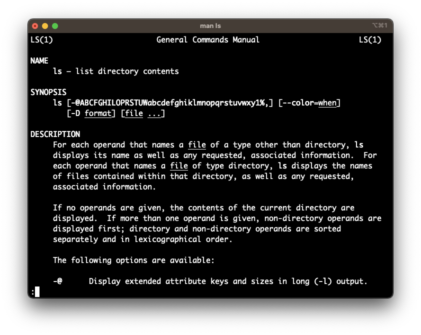

Introducing the Shell
What is the shell?
The shell (also known as the command-line) is a program that allows us to tell the computer what to do by giving it a “command” Figure 1a.
Other names for the shell are terminal, Bash, UNIX command line, and more.
Another common way we tell the computer what to do is through the use of a “point and click” graphical user interface (GUI) approach Figure 1b.


Why use the shell?
Isn’t pointing and clicking easier? Imagine you had the following task:
Take a look below to see the process for GUI and CLI.
1. Create new file
2. Open file 1, copy line 1, paste into new file, close file 1.
3. Open file 2, copy line 1, paste into new file, close file 2.
4. Repeat 7 more timeshead -n1 -q *.txt > new-file.txtFor this task, the GUI was tedious, time-consuming, and error-prone while the CLI was a single-command, quick, and relatively error proof.
Accessing the Shell
Let’s start using the shell. Open the shell (terminal) on your computer. Select the appropriate instructions below, based on your operating system.
- Go the the Start menu and select “All Apps”.
- Scroll down the list of applications and select the
Gitoption. - From the drop-down menu, select
Git Bash. - A terminal should open up.
- Open Finder and go to the Applications tab.
- Scroll down the list of applications and select
Utilities. - Select
Terminal. - A terminal should open up.
Using the shell
Once we open our terminal, the $ shows us that shell is ready for input.
Let’s see what day it is using the ls command.
lsstands for list- lists the objects in a location
In your terminal, type ls and press enter.
lsCryptococcus_neoformans_var_grubii_h99.CNA3.39.gtf
Cryptococcus_neoformans_var_grubii_h99.CNA3.39.gtf.gz
example.gtf
exercise-data
north-pacific-gyre
thesisBefore we learn more commands, let’s learn about the structure of commands.
Command syntax
Commands follow a general syntax
command option/flag argument
command– the main commandoption/flag– modifies the behavior of the command, often optionalargument– the source and/or target of the command, sometimes optional
- Options use either
-or--to signal their usage. - Arguments can be either a target (as in the
lscommand) or both a source and target (as in themvcommand)
Alter Command Behavior
Let’s change the way ls command behaves by providing a value for the option.
In your terminal, type ls -F and press enter.
ls -FCryptococcus_neoformans_var_grubii_h99.CNA3.39.gtf
Cryptococcus_neoformans_var_grubii_h99.CNA3.39.gtf.gz
example.gtf
exercise-data/
north-pacific-gyre/
thesis/This -F option/flag returns the output in a different format, with a / following directories and @ preceeding symbolic links.
Getting help
To better understand command usage and their options we can use the following (depending on the command).
| Method of getting help | Description | Example |
|---|---|---|
--help or -h option/flag |
Displays help menu for the command/program | ls --help |
man command |
Displays the manual for the command/program in-depth | man ls |

--help flag
man commandMaking sense of errors
The shell provides (usually) helpful and informative error messages.
For example, if you look closely at the ls --help example above, you’ll see that the usage of --help actually resulted in an error (see below).
Q&A: What is the error telling us?
ls: unrecognized option `--help'
usage: ls [-@ABCFGHILOPRSTUWabcdefghiklmnopqrstuvwxy1%,] [--color=when] [-D format] [file ...]Q&A: What is the error above telling us?